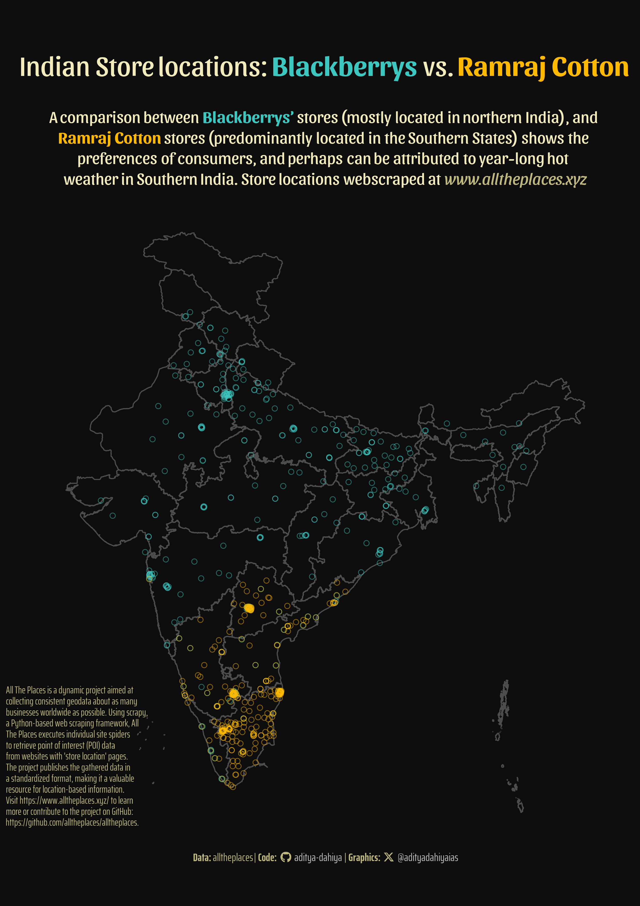

All the Places is a project aimed at generating point of interest (POI) data by sourcing information from websites with ‘store location’ pages. The project utilizes scrapy, a popular Python-based web scraping framework, to run individual site spiders that extract POI data. The results are then published in a standard format. There are several scrapy tutorials available on-line, and this series on YouTube provides a reasonable starting point.

Comparing Store Locations for Blackberrys and Ramraj Cotton in India
How I made this graphic?
Loading required libraries, data import & creating custom functions
Code
# Data Import and Wrangling Toolslibrary(tidyverse) # All things tidylibrary(janitor) # Cleaning names etc.# Final plot toolslibrary(scales) # Nice Scales for ggplot2library(fontawesome) # Icons display in ggplot2library(ggtext) # Markdown text support for ggplot2library(showtext) # Display fonts in ggplot2library(colorspace) # Lighten and Darken colourslibrary(ggthemes) # Themes for ggplot2library(patchwork) # Combining plotslibrary(ggfx) # Outer glow in the maplibrary(magick) # Adding images to plot# Mapping toolslibrary(rnaturalearth) # Maps of the World library(sf) # All spatial objects in Rlibrary(geojsonio) # To read geojson files into R# Importing raw data: Ramraj Cottonname_of_store1 <-"ramraj_cotton_in"url1 <-paste0("https://alltheplaces-data.openaddresses.io/runs/2024-04-20-13-31-46/output/", name_of_store1, ".geojson")df1 <- geojsonio::geojson_read(url1, what ="sp") |>st_as_sf(crs =4326) |> janitor::clean_names() |>mutate(store_name ="Ramraj Cotton")# Importing raw data: Blackberrys Indianame_of_store2 <-"blackberrys_in"url2 <-paste0("https://alltheplaces-data.openaddresses.io/runs/2024-04-20-13-31-46/output/", name_of_store2, ".geojson")df2 <- geojsonio::geojson_read(url2, what ="sp") |>st_as_sf(crs =4326) |> janitor::clean_names() |>mutate(store_name ="Blackberrys")rm(url1, url2, name_of_store)# Map of India with statesindia_map <-read_sf(here::here("data", "india_map", "India_State_Boundary.shp")) |>st_simplify(dTolerance =100)# An outer map of India to have a glowindia_outer_map <-read_sf(here::here("data", "india_map", "India_State_Boundary.shp")) |>st_simplify(dTolerance =100) |> rmapshaper::ms_dissolve() |># removing the internal state borders rmapshaper::ms_simplify(keep =0.05) # removing left over multiploygons
Visualization Parameters
Code
# Font for titlesfont_add_google("Sansita",family ="title_font") # Font for the captionfont_add_google("Saira Extra Condensed",family ="caption_font") # Font for plot textfont_add_google("Amita",family ="body_font") showtext_auto()# Background Colourbg_col <-"grey5"# Colour for the texttext_col <-"#F2EBBBFF"# Colour for highlighted texttext_hil <-"#F2EBBBFF"# Colour for brandscol_bb <-"#FFA400FF"col_rc <-"#862633FF"# Define Base Text Sizets <-40# Caption stuff for the plotsysfonts::font_add(family ="Font Awesome 6 Brands",regular = here::here("docs", "Font Awesome 6 Brands-Regular-400.otf"))github <-""github_username <-"aditya-dahiya"xtwitter <-""xtwitter_username <-"@adityadahiyaias"social_caption_1 <- glue::glue("<span style='font-family:\"Font Awesome 6 Brands\";'>{github};</span> <span style='color: {text_hil}'>{github_username} </span>")social_caption_2 <- glue::glue("<span style='font-family:\"Font Awesome 6 Brands\";'>{xtwitter};</span> <span style='color: {text_hil}'>{xtwitter_username}</span>")
Annotation Text for the Plot
Code
plot_title <- glue::glue("Indian Store locations: <b style='color:{col_bb}'>Blackberrys</b> vs. <b style='color:{col_rc}'>Ramraj Cotton</b>")plot_caption <-paste0("**Data:** alltheplaces", " | **Code:** ", social_caption_1, " | **Graphics:** ", social_caption_2 )plot_subtitle <- glue::glue("A comparison between <b style='color:{col_bb}'>Blackberrys'</b> stores (mostly located in northern India), and <br><b style='color:{col_rc}'>Ramraj Cotton</b> stores (predominantly located in the Southern States) shows the <br>preferences of consumers, and perhaps can be attributed to year-long hot <br>weather in Southern India. Store locations webscraped at <i style='color:{text_hil}'>www.alltheplaces.xyz</i>")
inset1 <-ggplot() +annotate(geom ="text",x =0,y =0,label =str_wrap("All The Places is a dynamic project aimed at collecting consistent geodata about as many businesses worldwide as possible. Using scrapy, a Python-based web scraping framework, All The Places executes individual site spiders to retrieve point of interest (POI) data from websites with 'store location' pages. The project publishes the gathered data in a standardized format, making it a valuable resource for location-based information. Visit https://www.alltheplaces.xyz/ to learn more or contribute to the project on GitHub: https://github.com/alltheplaces/alltheplaces.", 50),colour = text_hil,family ="caption_font",size =10,lineheight =0.3,hjust =0,vjust =1 ) +theme_void()# image_bb_url <- "https://blackberrys.com/cdn/shop/files/LOGOheaderenew.png"# # image_read(image_bb_url) |> # image_# image_background(color = bg_col)
Compiling Plots with Patchwork
Code
g <- g_base +# Add inset to the plotinset_element(p = inset1, left =-0.3, right =0.22,bottom =0.01,top =0.5, align_to ="plot" ) +# Basix Plot Annotationsplot_annotation(theme =theme(plot.background =element_rect(fill = bg_col, colour =NA, linewidth =0 ) ) )